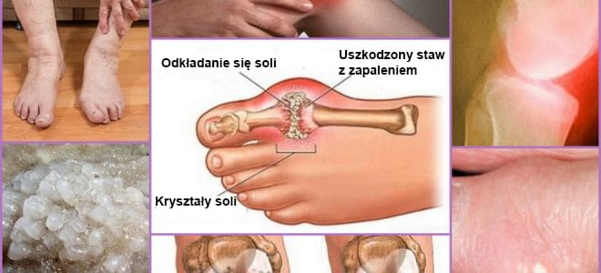
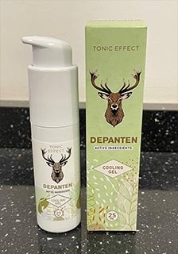
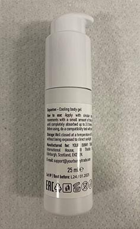

„Polskie metody leczenia stawów mnie szokują” Znany niemiecki reumatolog udzielił szczerego
wywiadu polskiej agencji prasowej
Doktor Karol Fiszer – Kierownik oddziału Centrum Reumatologii w światowej
sławy klinice Charite:
Jest tylko jedna przyczyna chorób stawów, ale polscy lekarze całkowicie ją ignorują.
Dr Karol Fiszer: „W Polsce choroby stawów są nadal leczone przestarzałymi i
nieskutecznymi lekami, które wymagają ciągłego stosowania przez całe życie. W pozostałej
części Europy stawy są traktowane jak katar”.
W ubiegłym roku Karol Fiszer przyjechał do Polski, aby wymienić się doświadczeniami ze
swoich polskimi kolegami. Według niego to, co zobaczył jest nie do wyjaśnienia. W naszym
kraju, według doktora, reumatologia utknęła w połowie ubiegłego wieku.
Po głośnych wystąpieniach w Niemczech dr Karol Fiszer zgodził się udzielić wywiadu dla
polskiej agencji prasowej. Co nie podoba się słynnemu lekarzowi w polskiej medycynie? I
dlaczego twierdzi, że polscy OBYWATELE z obolałymi stawami nigdy nie będą mogli stać się
zdrowi?
Rozmawiając z polskimi dziennikarzami, Pan doktor powiedział, że to, co Pan zobaczył w
Polsce, było szokujące. Czy możemy prosić o komentarz?
Chcę od razu powiedzieć, że mam dobre nastawienie do Polski, kultury polskiej i obywateli.
Ale stan, w jakim znajduje się wasza medycyna, jest naprawdę szokujący dla europejskich
lekarzy. Wasza medycyna jest opóźniona o co najmniej 20, a może nawet o 30 lat. W każdym
razie w leczeniu chorób stawów i układu mięśniowo-szkieletowego. Można powiedzieć, że taka
nauka jak reumatologia w Polsce nie istnieje.
Zobaczcie, co lekarze oferują w leczeniu stawów w Polsce: żele Viprosal, Dolgit, Voltaren,
Fastum, Diclofenac, Teraflex, Nurofen i inne podobne leki.
Jednak leki te NIE LECZĄ STAWÓW I CHRZĄSTEK, łagodzą jedynie objawy choroby – ból,
zapalenie, obrzęk. Teraz wyobraź sobie, co dzieje się na poziomie ciała. Kiedy dana osoba
bierze pigułkę, stosuje maść znieczulającą lub wykonuje zastrzyk, ból ustępuje. Ale gdy
tylko lek przestaje działać, ból natychmiast powraca.
A ból jest ważnym sygnałem, sygnalizuje, że w stawie zachodzi proces patologiczny. Tylko
zagłuszając ból, dotknięte stawy są narażone na jeszcze większe niszczące skutki. Proces
niszczenia jest przyspieszany 3–5 razy i ostatecznie prowadzi do nieodwracalnych zmian, do
całkowitego unieruchomienia i niepełnosprawności.
Ta metoda radzenia sobie z bólem stawów w Europie nie była stosowana od ponad 20 lat.
Środki przeciwbólowe stosuje się tylko w ekstremalnych przypadkach, bardzo dokładnie i z
uważnością. W Niemczech są sprzedawane wyłącznie na receptę i pod ścisłą kontrolą.
Tak zwane „chondroprotektory” są całkowicie zakazane, jako fałszywe i bezużyteczne leki.
Wasi lekarze i farmaceuci kaleczą ludzi! Oczywiste jest, że ciągłe sprzedawanie w wysokich
cenach środków na wyeliminowanie objawów jest znacznie bardziej opłacalne niż wyleczenie
choroby raz na zawsze, przywrócenie zapadającego się stawu, ale jest to również
niemożliwe!
A jak jest z leczeniem stawów w Niemczech?
Wszyscy niemieccy lekarze, od profesorów reumatologii po zwykłych terapeutów i ratowników
medycznych, od dawna rozumieją, że nie należy usuwać konsekwencji choroby, ale jej
przyczyny. To jest klucz do pełnego, szybkiego i bezpiecznego leczenia. A jaka jest główna
przyczyna uszkodzenia stawów? Jest to osadzanie soli z powodu upośledzenia krążenia mazi
stawowej.
Urata jest prawdziwą solą kwasu moczowego, przyczyną dny moczanowej.
Osteofity – kalcynowane sole, są przyczyną pozostałych 97% chorób stawów i kręgosłupa.
Wszystkie rodzaje zapalenia stawów i artroza, osteochondroza, osteoporoza, reumatyzm,
zapalenie kaletki, a nawet higroma. Wszystkie te choroby mają jeden powód – gromadzenie
osteofitów.
W zaawansowanych przypadkach duże nagromadzenie soli może łatwo oddzielić część kości
ostrym ruchem, powodując w ten sposób całkowitą niepełnosprawność i trwałe unieruchomienie
stawu.
Bardzo niebezpieczne błędne przekonanie, że wapń jest dobry dla stawów. Tak, wapń jest
dobry, ale tylko dla ZDROWYCH stawów. Kiedy stawy już bolą lub pękają, oznacza to,
że utworzyła się już w nich warstwa osteofitów, a wapń, oprócz wzmocnienia tkanki kostnej,
wzmacnia również sole osteofitów, pogarszając i przyspieszając ich wzrost.
Dlatego niemieccy reumatolodzy przede wszystkim przywracają krążenie krwi w chorym stawie,
tak że gromadzone przez lata sole są z niego usuwane. To z kolei przywraca normalne
krążenie mazi stawowej i rozpoczyna proces przywracania tkanek stawowych.

„Wzrosty” soli na powierzchni stawu – podstawowa przyczyna wszystkich patologii
W rzeczywistości stawy ludzkie są w stanie łatwo się zregenerować, mogą samodzielnie się
regenerować, jak ogon jaszczurki. Trzeba im tylko trochę w tym pomóc – uwolnić je od
„przylegających” do nich soli, a proces ten przebiegnie sam.
W latach 90 ubiegłego wieku szwajcarskim naukowcom udało się uzyskać specjalną formę
witaminy B, tak zwany alfa-artererol. Uzyskuje się go poprzez syntezę naturalnych składników: olejku eterycznego (mentol i innych), ekstraktu z arniki montana oraz kilka innych składników.
Substancja ta jest w stanie przeniknąć do cząsteczek soli i rozerwać je od wewnątrz – w
rezultacie powierzchnie stawów są czyszczone, przywracany jest przepływ krwi i krążenie
mazi stawowej. NA ZAWSZE! A dokładniej, do momentu, gdy sole ponownie się nagromadzą (ale
zajmie to kilka dekad). NIE WOLNO STALE używać leków, aby pozbyć się bólu i stanów
zapalnych. Nie trzeba się obawiać, że gdy staw „klinuje się” na zawsze, konieczna jest
całkowita utrata mobilności i protetyki. Ludzie stają się całkowicie zdrowi na
dziesięciolecia.
Kiedy zobaczyłem polskie statystyki medyczne, włosy stanęły mi dęba. Czy wiesz, jaka jest
najczęstsza przyczyna niepełnosprawności w Polsce? To nie jest rak, ani AIDS, ani
cukrzyca, tylko artroza! Najprostsza artroza, która jest leczona w Niemczech przez 2–3
tygodnie najtańszym lekiem, prowadzi do niepełnosprawności w Polsce!
Obecnie w Niemczech choroby stawów nie są uważane za niebezpieczne patologie, chyba że
mówimy oczywiście o poważnych urazach pourazowych: złamaniach, zgnieceniach, pęknięciach
itp. Ból i zapalenie stawów mówią tylko, że są „zanieczyszczone” solami i czas je
oczyścić. Po 2-3 tygodniach „czyszczenia” stawy wracają do normy i problemy można
zapomnieć na następną dekadę.
Choroby stawów, które w Polsce próbują „leczyć” osobno, od dawna łączą się w Europie w
jedną chorobę, „Articulatio de sales” (tworzenie soli w stawach).
Ta choroba obejmuje:
Podagrę,
Artretyzm,
Artrozę,
Osteochondrozę,
Reumatyzm,
Osteoporozę,
Zapalenie kaletki maziowej,
Zapalenie zatok,
Torbiel.
Jest to bardzo krótka lista, ale pozostałe choroby są tylko podgatunkiem tych głównych
dziewięciu patologii. Na przykład koksartroza jest podgatunkiem artrozy itp.
I cała ta długa lista jest leczona bardzo prosto, poprzez banalne czyszczenie stawów.
Absolutnie bezpieczne czyszczenie, które nie wymaga nawet pomocy medycznej i jest
przeprowadzane w domu.
Jak są „czyszczone” stawy w Niemczech?
Dziś istnieją specjalne preparaty, które mają na celu oczyszczenie stawów z osadów soli.
Zawierają dużo pożytecznych ekstraktów. Na przykład żel jest
bardzo dobrym środkiem. Zawiera skutecznie dobrane ekstrakty, olejki eteryczne oraz inne
składniki, które w połączeniu mają zwiększoną skuteczność.
Kolejną ważną zaletą jest to, że zawiera kompleks makro i mikroelementów
połączonych w celu poprawy funkcjonowania tkanek stawowych. Oznacza to, że ma kompleksowy
wpływ na gojenie kości i chrząstki, mazi stawowej, włókien mięśniowych, tkanek więzadeł i
ścięgien. Cały możliwy zakres złożonych efektów.
zawiera dużo składników. Nie wymienię ich wszystkich, podam tylko te główne:
EKSTRAKT Z ARNIKI MONTANA
zapewnia właściwości przeciwzapalne, przeciwwybroczynowe i przeciwbólowe. Działa również antyseptycznie i naczynioochronnie.
MENTOL
wykazuje słabe działanie antyseptyczne, chłodzi skórę, a także działa miejscowo znieczulająco.
OLEJEK EUKALIPTUSOWY
dzięki zawartemu w nim cineolowi, działa antyseptycznie i przeciwzapalnie. Hamuje również rozwój bakterii oraz działa chłodząco na skórę i błony śluzowe.
OLEJ KAMFOROWY
stosowany do nacierania przy bólach stawów o różnej etiologii, m.in. reumatoidalnym zapaleniu stawów, zapaleniu mięśni, zapaleniu ścięgien i nerwobólach.
, o ile wiemy, nie jest sprzedawany w polskich aptekach?
Tak, to prawda. Polscy lekarze wolą „nakarmić” ludzi tonami środków znieczulających i
chondroprotektorów, zamiast angażować się w rzeczywiste leczenie.
Jednocześnie nie ma wątpliwości, że polscy reumatolodzy, przynajmniej ci, którzy są
zainteresowani zaawansowanymi metodami leczenia, wiedzą o i jego zdolnościach
regeneracyjnych. Ale nie ryzykują przepisania leku, którego nie ma na liście Ministerstwa
Zdrowia.
O ile mi wiadomo, producent chciał wejść na polski rynek. Ale nie pozwolono mu
na to (biurokracja w Polsce jest nie do wyegzekwowania). Jest to zrozumiałe – jeśli ten
lek pojawi się w aptekach, polska mafia apteczna poniesie ogromne straty. Rzeczywiście,
dzisiaj farmakologia to biznes! Nawet w Europie. Ale w rozwiniętej Europie biznes jest
kontrolowany przez państwo.
Co poradziłby Pan osobom cierpiącym na bóle stawów?
Zwykli ludzie, zwłaszcza osoby po 50 roku życia, najbardziej cierpią z powodu zacofania
polskiej medycyny. To nie ich wina, tak po prostu działa system opieki zdrowotnej.
Ale na szczęście istnieje wyjście. Narodowy Instytut Medycyny i Farmakologii wraz z
producentem uruchomili program zniżek dla wszystkich polskich obywateli,
cierpiących na problemy ze stawami. Pracownicy Instytutu utworzyli specjalne centrum
dystrybucji i dostarczyli niezbędną ilość preparatu. Dlatego teraz każdy mieszkaniec
Polski może kupić w
symbolicznej cenie z dostawą
na terenie całego kraju.
Teraz opowiem co należy zrobić, żeby zdobyć :
Wypełnić oficjalny formularz zamówienia na końcu artykułu.
Poczekać na telefon konsultanta, a on odpowie na wszystkie pytania. Podać mu adres
dostawy.
W ciągu 5–7 dni przyjedzie kurier z paczką.
Dystrybuujemy od 2 miesięcy. Kilka tysięcy obywateli Polski skorzystało już z
tej okazji. Prosimy wszystkich, którzy otrzymali , aby ocenili, jak dobrze
preparat pomógł im w skali od 1 do 10. W chwili obecnej w badaniu wzięło udział ponad 3000
osób, a średnia ocena to 9.97 z 10.
Jak widać, pomógł tysiącom obywateli Polski uzyskać ruchliwość i pozbyć się
bólu, a ty możesz być wśród nich.
Jak długo będzie trwać promocja preparatu?
Promocja będzie ważna do wyczerpania zapasów. Ale chcę cię natychmiast ostrzec, że
opakowań w cenie
pozostało bardzo niewiele. Zamówień wciąż przybywa. Klienci nasz polecają, swoim znajomym
i krewnym. Nawet nie spodziewaliśmy się, że informacja o rozprzestrzeni się tak
szybko.
Wszystkim osobom po 45 życia polecam zamówić preparat w promocyjnej cenie
.
Stanem na dzień
w cenie promocyjnej pozostało:
23 szt.
Komentarze:
Żaneta Czarska
Dziękuję. Bardzo przydatne! Pełna kuracja zastrzyków w prywatnym szpitalu kosztowałaby
mnie 38000 złotych! Zamówiłam , dopóki cena jest taka! Na początku nie
wierzyłam! Konsultant powiedział, że są jeszcze opakowania w cenie promocyjnej, ale
niedługo się skończą. Dobrze, że trafiłam na tę informację.
Wiktor Żelkowski
Jestem jednym z tych, którym już udało się wypróbować żel. On jest naprawdę najlepszy,
jaki widziałem. Mam doświadczenie w artrozie - ta choroba dręczy mnie od 7 lat. Byłem
już gotowy do przyjmowania tabletek i zastrzyków przez całe życie, ale w końcu po
kuracji ból ustąpił. Zupełnie. Polecam wszystkim!
Alicja
Również znamy o żelu , również nam bardzo pomógł. Ciągle brałam zastrzyki, a po
użyciu żelu latam już drugi miesiąc!

Michał Depczyk
Mam 63 lata. Kolana bolą od 10 lat. Ostatnio ból stał się całkowicie nie do zniesienia.
Znajomy lekarz (przyjaciel z dzieciństwa) mówił o tym programie i doradził mi ten żel 3
miesiące temu. Teraz skaczę jak w młodości... Życie wróciło do normy! Ten żel jest
niesamowity!
Kramarz Małgorzata
Zamówiłam w promocji. Obiecali, że za 5 dni odbiorę. Bardzo na to liczę.
Olga Kowalska
Moim zdaniem głównym celem lekarzy jest odebranie nam pieniędzy w jak największym
stopniu, bardziej niż niczym, czym są zainteresowani. Co pół roku przebite. Jesienią
tego roku bałam się wstrzyknąć. W końcu nawet nie patrzyłam na to, jakie inne choroby
mam i jak wpłynie to na organizm. Bezwzględna obojętność i przypisywanie tych leków, za
które otrzymują pieniądze od firm. Może w innych miejscach jest jeszcze gorzej, ale nie
jestem pewna. Mam takie doświadczenie. A o niedrogim europejskim preparacie, dobra
wiadomość!
Artur Kozacki
Tak, w naszym kraju możesz tylko umrzeć. Mam 59 lat. Już dwie trzecie rówieśników
zmarło, reszta ledwo się porusza z powodu wiecznego bólu nóg, ramion, pleców ... Warto
rozważyć
Kamil Wilk
Żel jest naprawdę niewyobrażalny. Używałem go zeszłego lata (mój syn przywiózł z
Niemiec). Problem z głowy. Nadal nie ma objawów. Sam jestem zaskoczony. Czuję się na 5+.
Polecam wszystkim spróbować. Zwłaszcza jeśli teraz cena to jedynie
nic nie tracisz!
Lena Franiak
Mnie też się spodobał ten żel. Najpierw stosowałam etodolak, potem meloksykam + ketorol.
Ale nagle przestały działać. Potem poszłam do specjalisty, a on poradził mi, abym
spróbowała żelu (młody specjalista prawdopodobnie nadal wierzył, że preparat
powinien być przeznaczony dla ludzi, a nie do pompowania pieniędzy!). pomógł
mi prawie od razu - ból szybko zniknął, ale zaczęłam smarować zgodnie z zaleceniami
specjalisty. Po 3 tygodniach zapomniałam, że coś mnie boli. Czuję się jak w mojej
młodości!

Artur Barczyk
Sąsiad z działki ma 72 lata, często narzekał na dolną część pleców. Ale w ostatnim
miesiącu widzę go aktywnego i wesołego. Powiedział, że wnuk mu przywiózł .
Teresa Kowal
Czytałam recenzje na niemieckich forach o , patrzę, a kończy się na naszych
oczach! Dzięki Bogu udało mi się zrobić zamówienie za
, powiedzieli
przez telefon, że zostało bardzo niewiele sztuk. Polacy, spieszcie się!
Paweł Kamiński
Dowiedziałem się o na jednym z forów dla osób cierpiących na problemy ze
stawami. Tam wielu chwali się swoimi wynikami. Postanowiłem też zamówić. Smaruję tylko 3
dni i już jest zauważalna poprawa. Ból minął całkowicie, chrupanie stało się zauważalnie
cichsze, niewielki obrzęk nadal utrzymuje się, ale jest znacznie lepiej niż było.
Ogólnie rzecz biorąc, później napiszę o efektach kuracji, ale początek jest przyjemny
Maria Krzaczewska
Dziękuję. Zamówiłam dla siebie i męża. Zapytałam konsultanta, kiedy będzie sprzedawany w
aptece - powiedział, że nie wiadomo. Dlatego może to jedyny sposób, aby wypróbować ten
żel.

Komentarze: